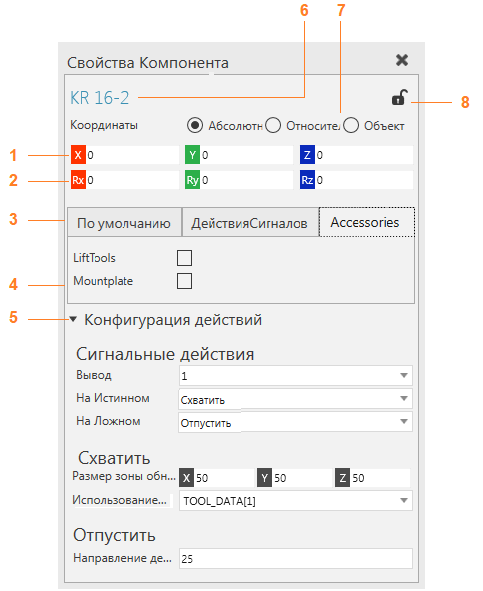
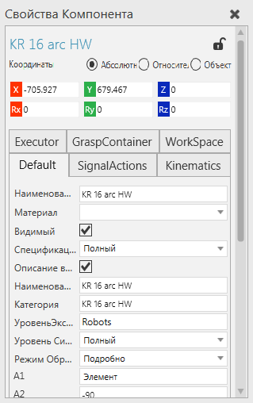
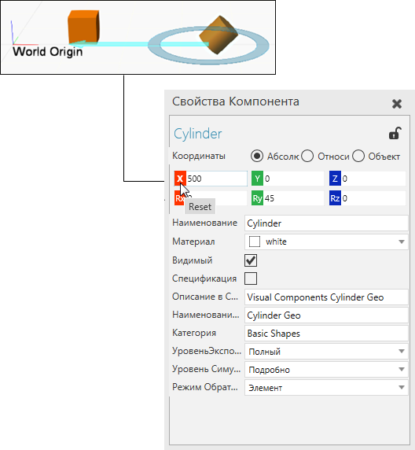
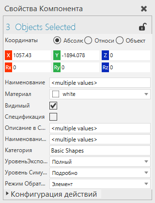

Панель Свойства позволяет редактировать свойства выбранного объекта.

1. |
Значения позиции |
2. |
Значения ориентации |
3. |
Вкладки свойств |
4. |
Свойство |
5. |
Раздел свойств |
6. |
Имя объекта |
7. |
Вид Системы координат |
8. |
Блокировка редактирования |

Контекст
В некоторых случаях имя панели «Свойства» может дополняться наименованием указывающим на тип объекта текущего выделения.

Система координат
Положение и ориентация объекта основаны на активной системе координат в сцене.

Положение объекта определяется в координатных осях XYZ. Каждую кнопку оси можно нажать, чтобы сбросить ее значение до нуля или отредактировать напрямую, выбрав ее поле.
Название |
Описание |
|---|---|
Абсолютные |
Глобальная система координат с фиксированным началом. Используйте это для глобального позиционирования выбранного объекта в 3D-мире и чертеже. |
Относительные |
Система координат объекта, к которому привязан выбранный объект в сцене. Отношение родитель-потомок выбранного объекта определяет его родительскую систему координат. Объект может иметь только одного родителя. Примечание: По умолчанию компоненты присоединены к 3D-миру, поэтому мировая и родительская системы координат совпадают. Компонент может быть присоединен к узлу другого компонента, таким образом, местоположение этого компонента может быть определено относительно начала его родительского узла. Это означает, что когда родительский узел перемещается, дочерние компоненты перемещаются вместе с ним, чтобы сохранить свое относительное положение относительно родительского источника. |
Объект |
Система координат выбранного объекта с началом относительно его текущего состояния. То есть выбранный объект можно перемещать относительно его текущего местоположения. |
Общие свойства
Когда выбрано два или более объектов, на панели Свойства отображается число выделенных объектов, положение последнего выделенного объекта и свойства, общие для всех выделенных объектов. Это позволяет редактировать свойства нескольких объектов.

Поле свойства помечено <multiple values> чтобы указать, что свойство имеет другое значение в одном или нескольких выбранных объектах. В этом случае свойство может иметь или не иметь уникальное значение. Например, компоненты должны иметь уникальные имена, поэтому вам следует избегать редактирования свойства Наименование.
Каждый компонент имеет набор общих свойств, которые создаются вместе с компонентом во время его создания.
Название |
Описание |
|---|---|
Наименование |
Название компонента. |
Материал |
Материал компонента и любых его дочерних узлов и элементов, которым не назначен материал. |
Видимый |
Включает/выключает видимость компонента. |
Уровень экспорта PDF |
Определяет, как геометрия компонента экспортируется в файл 3D PDF. |
Спецификация |
Включает/выключает добавление компонента в таблицу спецификаци. |
Наименование в Спецификации |
Определяет имя компонента в таблице спецификации. |
Описание в Спецификации |
Определяет описание компонента в таблице спецификации. |
Категория |
Определяет свойство метаданных Категория (Type) компонента. По данному свойству компоненты группируются в дереве построений. |
Уровень симуляции |
Указывает настройку точности для имитации движений компонентов. По умолчанию Точность определяется моделированием. Подробно Максимально точно имитирует движения компонента, тем самым моделируя полный диапазон движения компонента. Сбалансированный Имитирует движения компонента таким образом, чтобы он был сбалансирован с производительностью моделирования, благодаря чему компонент может перемещаться из точки в точку без имитации ненужных движений суставов. Быстро Максимально быстро имитирует движения компонента, благодаря чему компонент может привязываться к соединению или мгновенно перемещаться из точки в точку. |
Режим Обратной Стороны |
Определяет, как геометрия компонента, не обращенного к мировой 3D-камере, визуализируется в сцене. |